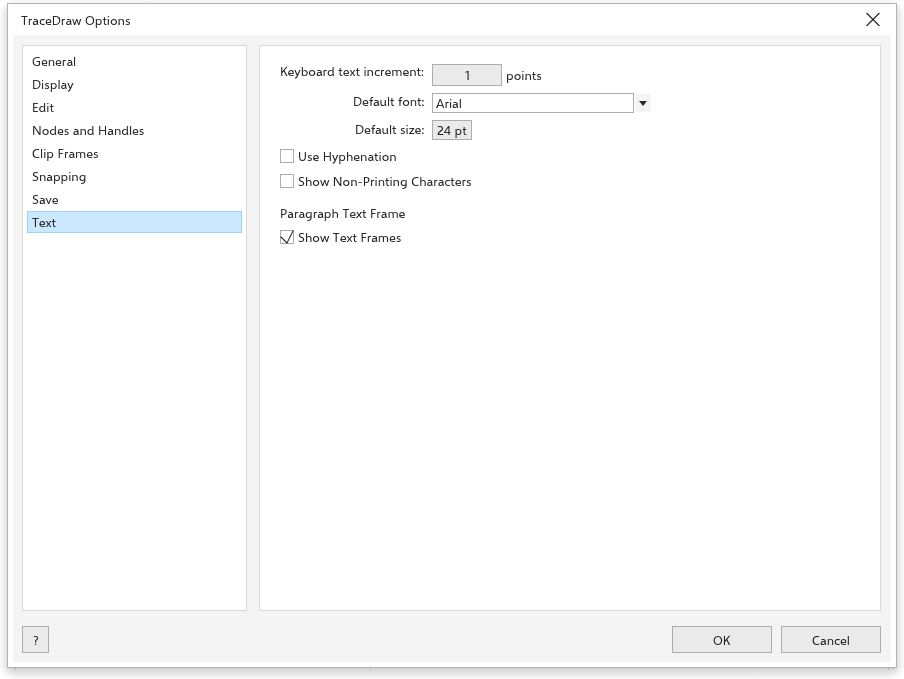

Opzioni di TraceDraw
Strumenti > Opzioni > TraceDraw (Ctrl+J) imposta il funzionamento del programma. Scegli una pagina dall'elenco a sinistra.
Generale

- All'avvio di {app}: mostra la schermata di benvenuto, avvia un nuovo documento o apri l'ultimo documento modificato.
- Mostra la finestra di dialogo Nuovo documento (attivo): chiede le impostazioni di un nuovo disegno; vedi Creare un disegno.
- Mostra la schermata iniziale all'avvio (attivo).
- Livelli di annullamento: quanti passaggi puoi annullare (150 in partenza).
Visualizzazione

- Prova colori: mostra i colori come verranno stampati.
- Mostra i suggerimenti (attivo), Nascondi il riquadro di selezione per gli strumenti curva e Attiva il tracciamento dei nodi (disattivato: se attivo, lo strumento Selezione può trascinare i nodi di una curva selezionata).
- Anteprima a schermo intero: Mostra il bordo della pagina.
- Azione predefinita della rotellina del mouse: Zoom (in partenza) o Scorri.
- Calibrazione del righello: tieni un righello contro lo schermo e cambia la Risoluzione dello schermo finché le tacche coincidono, così lo zoom al 100% mostra le dimensioni reali. Ripristina rimette 96.
Modifica

- Angolo di vincolo: il passo di Ctrl quando ruoti e disegni (15 gradi in partenza).
- Precisione del disegno: le cifre decimali nella barra delle proprietà e nella barra di stato (3 in partenza).
- Visibility of inactive objects (20% in partenza) e Double-click to activate focus mode; vedi Modalità focus.
Nodi e maniglie

- Dimensione del nodo: piccola, media o grande.
- Forma del nodo per i nodi Cuspide, Smussato e Simmetrico.
- Mostra la direzione della curva durante la modifica.
- Colori: il Colore principale dei nodi e delle maniglie selezionati e il Colore secondario.
- Mostra i nodi non selezionati riempiti (Ctrl+Shift+G).
Cornice di ritaglio

- Centra automaticamente il nuovo contenuto: Quando il contenuto è completamente fuori dalla cornice (in partenza), Sempre o Mai.
- Mostra le linee nelle cornici di ritaglio vuote (attivo).
Vedi Inserire oggetti in una cornice.
Aggancio

- Aggancia agli oggetti (Alt+Z), Aggancia alla pagina, Aggancia alle linee guida, Aggancia alla griglia, la griglia della linea di base e Aggancia ai pixel.
- Raggio di aggancio (10 pixel in partenza).
- Mostra i segni dei punti di aggancio e il Suggerimento a schermo.
- Modalità: i punti a cui gli oggetti si agganciano, con Seleziona tutto e Deseleziona tutto.
Vedi Aggancio.
Salvataggio

- Backup: Esegui il backup del file originale prima di salvare (attivo) conserva il file precedente come
backup_of_<name>, Backup in la Stessa cartella del file originale o una posizione scelta. - Backup automatico (attivo): Backup ogni 20 minuti, in una cartella temporanea o in una posizione scelta. Dopo un arresto anomalo vengono proposti i backup; vedi Backup automatico e recupero.
Testo

- Incremento del testo da tastiera: di quanto Ctrl+8 e Ctrl+2 ingrandiscono e riducono il testo selezionato (1 punto).
- Font predefinito e Dimensione predefinita del nuovo testo.
- Usa sillabazione, Mostra caratteri non stampabili e Mostra cornici di testo.